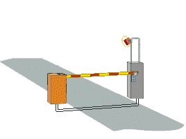
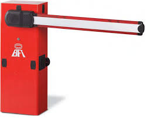
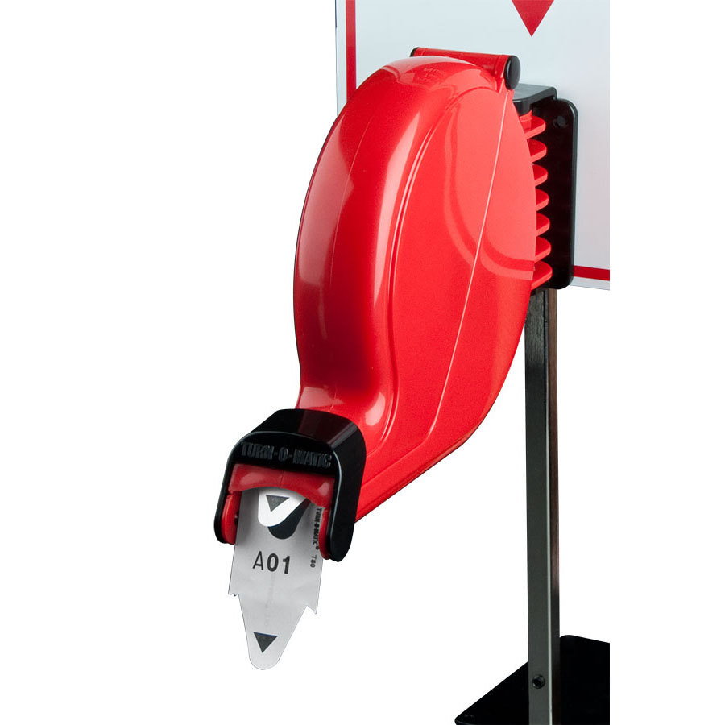
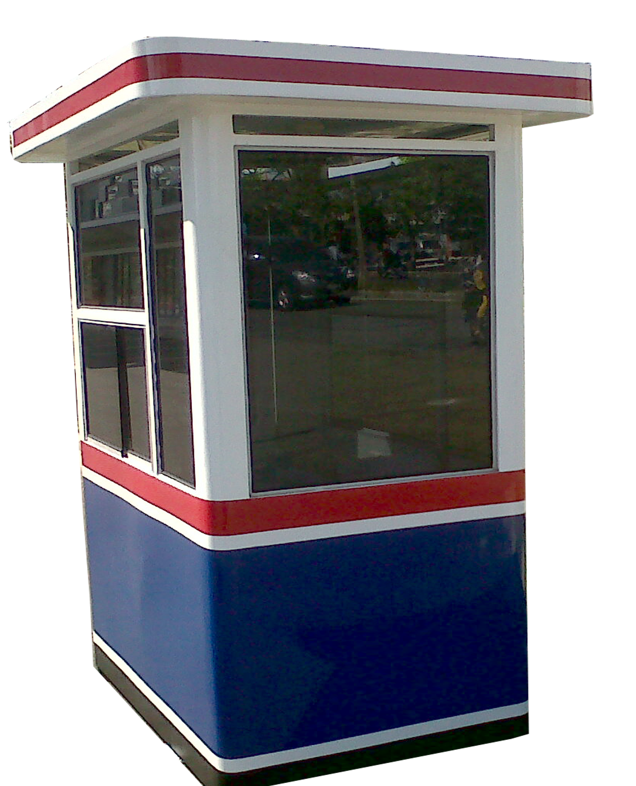

Barrier Gate “Palang-Parkir” adalah Kombinasi dari mesin motor yang sudah terbukti handal dengan sistem palang yang mewakili Mesin Palang Otomatis terbaik. Auto Mechanical Barrier alat yang cocok untuk digunakan di Mall, Bandar Udara, Pabean, kompleks Militer, Apartemen, Hotel, Pelabuhan, Pabrik, maupun untuk Perumahan.
Panjang Palang dapat dipesan sesuai ukuran, karena setiap tipe palang parkir berbeda untuk panjang palangnya. Kami mempunyai beberapa tipe yang dapat dipesan dan berbeda harga maupun merknya.
Parking & Revenue Control System adalah salah satu Alat Manajemen System Per-parkiran (PARCS) yang merupakan solusi manajemen ruang parkir sebagai Suatu Kesatuan Manajemen dimana perangkat lunaknya PARCS ialah salah satu perangkat lunak sangat dapat diandalkan saat ini dengan melalui proses pengembangan dan implementasi di puluhan lokasi, perangkat lunak dan koneksi hardware yang inovatif memberikan nilai tambah dalan pengelolaan keamanan dan kenyamanan di property anda.
| Item | Keterangan |
|---|---|
| Barrier Gate  Rp. 4000.000,00 | Barrier Gate / palang parkir system motorik perpaduan antara mesin motor dan modul controller yang dapat dikoneksikan dengan berbagai system control akses seperti :Tombol Manual , Remote Control , Mikro Controller komputer ( Software parkir ) , Dan berbagai akses control lain nya. |
| Tiket Dispenser  Rp. 4000.000,00 | berfungsi sebagai mesin pencetak nomor parkir dan lokasi |
| Aplikasi Palang Parkir Rp. 700.000,00 | Software server digunakan untuk mengendalikan sistem antrian secara keseluruhan, Dilengkapi database manajemen antrian dan Laporan pelayanan pelanggan. |
| Pos Parkir  Rp. 5000.000,00 | berfungsi sebagai ruangan kerja operator palang parkir selama jam kerja |